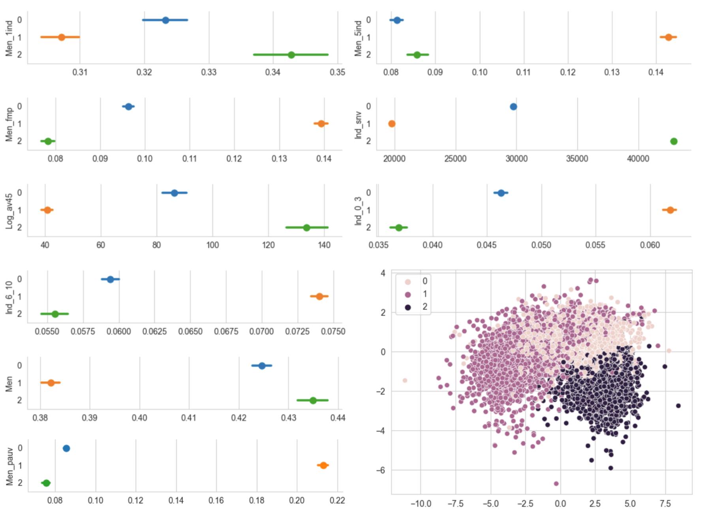

Income
and
night-time phone usage
What other
sociodemographic characteristics
are correlated with
high night-time phone usage
?

Low-income households often live in
older houses ,
live in bigger households ,
have more children
and are more often single parents
What causes observed relationships between
sociodemographic characteristics
and
high night-time phone usage
?
H1: City characteristics cause
differences in night-time phone usage
- Noise
- Home-Work Mobility
- Amenities
Trip Duration
\[\begin{equation*}
AD(h) = \sum_{t} P(t | h) \sum_{w} P(w| h, t) D_t(h,w)
\end{equation*} \]
- Public services (police, court)
- Large retail outlets (supermarkets, department stores)
- Food stores (bakeries, butchers)
- ...
- Cultural and sociocultural facilities (libraries, cinemas)
H2: Usage patterns cause differences in night-time phone usage
Possible Extensions
- Implications
- App addictiveness scale
- NightScreen index robustness